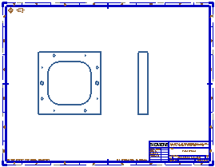

打开 drf5_associative_custom_symbol_dw。

图纸页“Sheet 1” 工作
在符号工具条上的符号下拉菜单中，选择从目录定义符号 。
在目录组中，展开 ANSI 英制文件夹。
依次展开销钉(Pin)、定位销(Dowel)文件夹。
选择 Dowel Pin, Hardened Ground Machine, A, Al 符号。.
在参数组中，设置下列值：
(D) 直径 = 3/8
(L) 长度 = 2
方位 = 俯视图
在文件夹视图组中，展开定制符号库，并确保已选择部件符号文件夹。
在符号名称组中，双击以使现有文本高亮显示，然后键入定位销(参考)。
在设置组中，确保已选中创建符号实例复选框。
点击确定。
将创建定制符号，并已准备好将一个实例添加到您的图纸中。